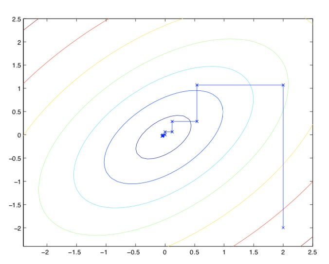
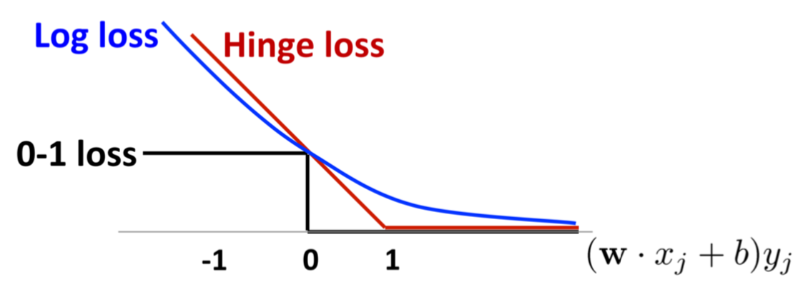

Soft Margin: non-separable dataset
SVM works with a prerequisite that the given dataset is linearly separable. Even the kernel trick provides an incredible approach to help increase the likelihood that that data is separable, but not always does. Generally, a speck of noise samples, say outliers, will fail the SVM due to its hard requirement $y^{(i)}(w^T x^{(i)} + b) \geq 1$. In order to improve this, we introduce the regularized (slacking) term $\xi_i$, such that the problem has changed into:
On top of that, examples are now permitted to have (functional) margin less than $1$. However, the “permission” will add extra penalty to the objective function by $C\xi_i$, which is a trade-off.
We can form the Lagrangian:
where $\alpha_i, r_i$ are the Lagrange multipliers.
The dual form of the problem:
By solving which, we can also obtain the optimal classifier like what we do in the linear separable scenario.
Remarks:
- $C$, as the penalty factors, is a hyperparameter in SVM. It indicate the measure of the penalty of wrongly classified samples;
- When $C$ increase, the contribution from wrongly classified samples will flood the primal objective, thus “caring the noises” too much, which is inclined to overfit.
- If $C$ goes to $\infty$, then it recovers to the hard margin: now we build the hyperplane along the contour of the “real” boundary.
- If $C$ approaches $0$, it confines the $\alpha_i$ too hard around $0$ and ignores the outliers.
- Now the minimize of objective include:
- maximize the margin (w.r.t $w$)
- minimize the number of wrongly classified points
SMO algorithm
Coordinate ascent
Introduce by John Platt, SMO (sequential minimal optimization) algorithm gives an efficient way of solving the dual problem. It mainly focuses on how we utilize the samples to update the parameters.
Consider the following unconstrained optimization problem:
The SMO algorithm uses so-called coordinate ascent to finish the update:
1 | Loop until convergence:{ |
In the inner loop, we hold all the variables fixed except for some $\alpha_i$, and re-optimize $W$ w.r.t just the parameters $\alpha_i$.

SMO
Coordinate ascent gives a powerful tools for update the parameters, but it fails for most constrained problems like our dual optimization problems due to the equality.
However, by altering a bit, we can let it work greatly on the SVM problem. In order not to violate the condition $\sum_{i=1}^m \alpha_iy^{(i)} = 0$, we may update two parameters at the same time:
1 | Repeat till convergence { |
Compared to the coordinate ascent, we instead hold $\alpha_3,\dots,\alpha_m$ fixed and re-optimize $W$ w.r.t $\alpha_1, \alpha_2$:
Hinge loss function
Let’s look back to the primal optimization problem. We can interpret the linear SVM in another way, to minimize the following (loss) objective funtion:
where $[z]_+$ is called hinge loss function, which is defined as:
This is to say, if given sample is correctly classified and has margin larger than $1$, the loss will be zero; on the contrary, it will be $1- y^{(i)}(w^T x^{(i)} + b)$.
The second term $\lambda ||w||^2$ is the $l_2$ regularized term.

From the figure above, we can see that hinge loss function is one of the continuous upper bound of $0-1$ loss. The logistic loss function decreases after the $1$, which means giving regard to every samples even they are far away from the decision boundary.
$0-1$ loss function in fact exhibits the “real loss” but its uncontinuity gives rise to the difficulty for update.
Reference:
Stanford CS229-note3 by Andrew Ng
Statistical Learning methods, by Li Hang (2012)